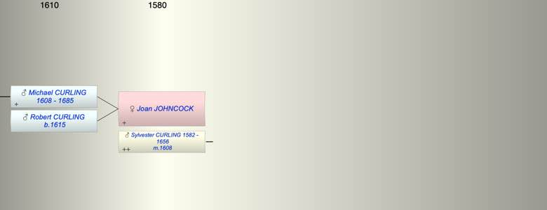

| [Index] |
| Joan JOHNCOCK |
|  |
| m. 01 Feb 1608 Sylvester CURLING (1582 - 1656) at St Peter, Thanet |
| Children (2): |
| Michael CURLING (1608 - 1685) |
| Robert CURLING (1615 - ) |
| Grandchildren (1): |
| Sylvester CURLING (1640 - 1662) |
| Events in Joan JOHNCOCK's life | |||||
| Date | Age | Event | Place | Notes | Src |
| 1608 | Birth of son Michael CURLING | St Peter, Thanet | Note 1 | ||
| 01 Feb 1608 | Married Sylvester CURLING (aged 26) | St Peter, Thanet | Note 2 | ||
| 1615 | Birth of son Robert CURLING | St Peter, Thanet | Note 3 | ||
| 1656 | Death of husband Sylvester CURLING (aged 74) | St Lawrence | Note 4 | ||
| 1685 | Death of son Michael CURLING (aged 77) | ||||
| Created on a Mac™ using iFamily for Mac™ on 8 Oct 2023 |